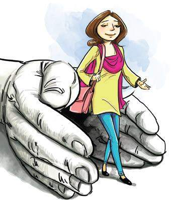
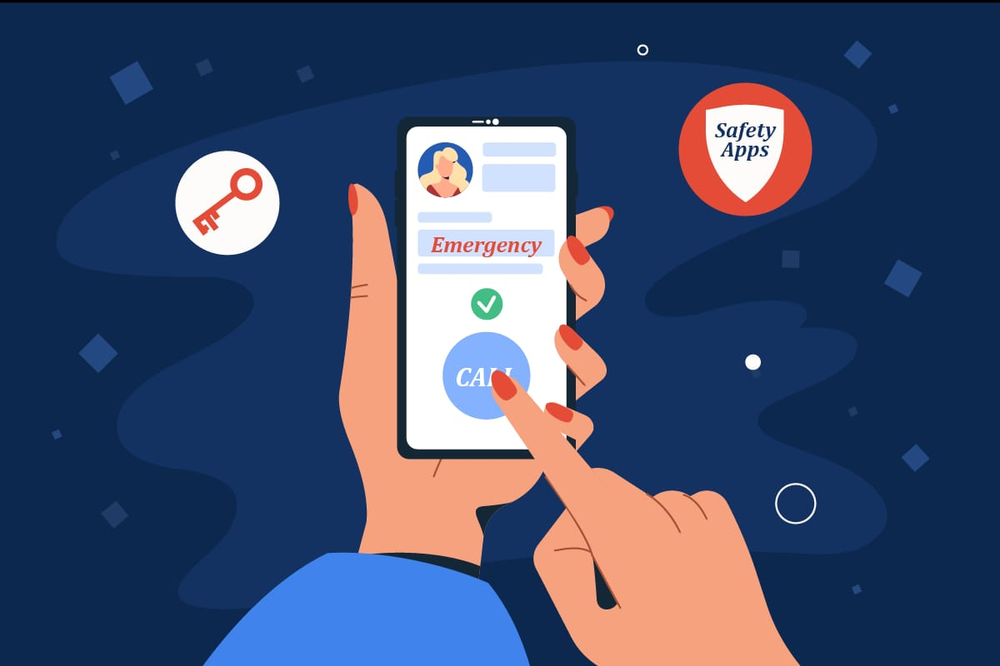
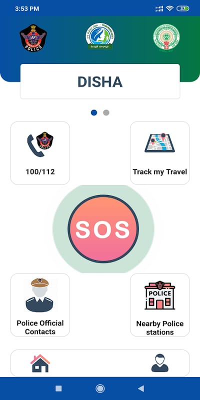

The women safety is the prime concern in today's world considering the jump in the number of accidents and crime rates against women. Especially in the metro cities where women have to stay out for long. According to a research report of bangladesh police and investigation agency which was conducted in 2020. Around 85% of the women had faced some of the other kind of harassment before moving out of the teenage. As women need to travel late night sometimes, it is important to stay alert and safe. Although the government is talking necessary measuers for their safety, still there are free safety apps for women that can help them to stay safe. Most of the females now a days carry their smartphone with themselves. So it is necessary to have at least one the below mentioned personal safety apps installed. Such a safety app for girls can certainly help in some way or the other.
Offence : Husband or relative of husband of a woman subjecting her to cruelty. Punishment : Imprisonment for upto 3 years and a fine.
offense : Marrying again during the lifetime of a husband or wife(bigamy). Punishment : Imprisonment for upto 7 years and a fine.
offense : Dowry death. Punishment : Imprisonment for a minimum of 7 years which may extend to life Imprisonment.
offense : Kidnapping, abusing, or inducing a women to compel her marraige, etc. Punishment : Imprisonment for upto 10 years and a fine.
Punishment : Imprisonment for upto 3 years and a fine, or both for specific acts.
Punishment : Imprisonment for not less than 3 years but which may extend to 7 years, and a fine.
Punishment : Imprisonment for 1 to 3 years for the first conviction and 3 to 7 years for a subsequent conviction, plus a fine.
Punishment : Imprisonment for upto 3 years for the first conviction and upto 5 years for a subsequent conviction, plus a fine.
Punishment : Imprisonment for upto 3 years and a fine, or both for specific acts.
Punishment : Imprisonment for upto 3 years and a fine, or both for specific acts.
offense : Criminal intimidation. Punishment : Imprisonment for upto 2 years or with a fine, or both ,if the threat is to cause death or grevious hurt, etc. Imprisonment for upto 2 years.
Punishment : Rigorous imprisonment for 20 years to life imprisonment, or death.
Punishment : Imprisonment for 2 to 7 years and a fine.
Punishment : Imprisonment for 5 to 10 years and fine.
Punishment : Imprisonment for not less than 20 years to life imprisonment, a fine.
offense : cheating and dishonestly inducing delivery of property. Punishment : Imprisonment for upto 7 years and a fine.
offense : trafficking a person. Punishment :
Rigorous Imprisonment for 7 years to 10 years and a fine .
If the victim is a minor, the punishment increases significantly.
These sections address serios crimes and provide stringent punishments to deter such offenses and protect individual's rights and safety.
Personal Safety Apps for Women: Interpreting everything about women’s safety apps in one line will look like a solution that helps ensure women’s safety when they are out of their homes and might face any endangered situation. Different apps perform the purpose in their respective ways, and some send an alarm to friends and relatives while others inform the police. Many apps follow the principle “prevention is better than cure,” and thus, they talk about the safest routes one can take to reach home or destination.
user's can send an SOS alert by pressing the SOS button within the app or by shaking their phone(if this feature is enabled).
Once activated, the app sends an alert to the Disha control room, the local police, and pre-selected emergency contacts with the user's location details.
After the SOS alert is sent, the app continuously shares the user's Real-Time location with the emergency resonders, ensuring that help can reach the user quickly.
The app provides regular location updates to the control room and emergency contacts.
The app can automatically start recording video or audio when an SOS alert is triggered, helping to collect evidence of the incident.
The Disha control room coordinate with the nearest police personnel to ensure a prompt response.
The app can also coordinate with other emergency services like ambulance services if required.
Users can pre-register contacts within the app who will receive notifications and updates during an emergency.
The app sends instant notifications to these contacts during an SOS alert.
Utilizing safety apps and technology, such as GPS tracking and emergency alert systems, helps women enhance their personal security.
The app is available for download on major app stores(e.g., Google Play Store for Android and Apple App STore for iOS).
Installation :users need to install the app on their smartphones and complete the registration process.
The Disha SOS app aims to empower individuals, particularly women, with a reliable and easy-to-use tool for personal safety and quick access to emergency assistance.
I met the police officers near by areas and we understood more problems faced by women in recent times.the officers explained as about few crimes such as Al,deep fake that are occurs in recent time .we explain about cyber bullying and safety apps like sos app, disha app.


The proposed design will deal with critical issues faced by women in the near past and will help to solve them with technological ideas. While the society may or may not change for the enhanced, the power to be autonomous, self-assured and truly free can come with arming oneself with the best possible device. This system can overcome the fear that scares every woman in the country about her safety and security.